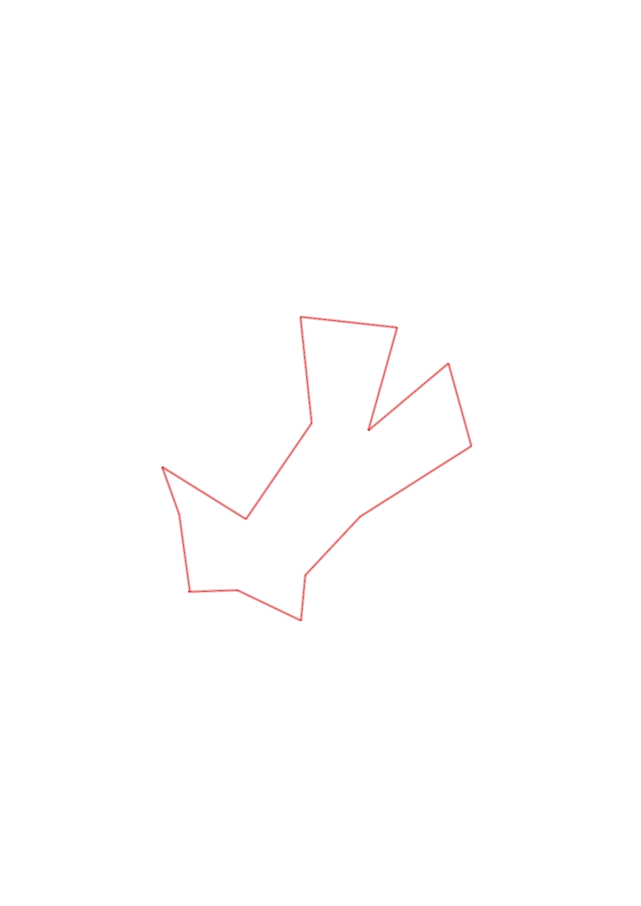
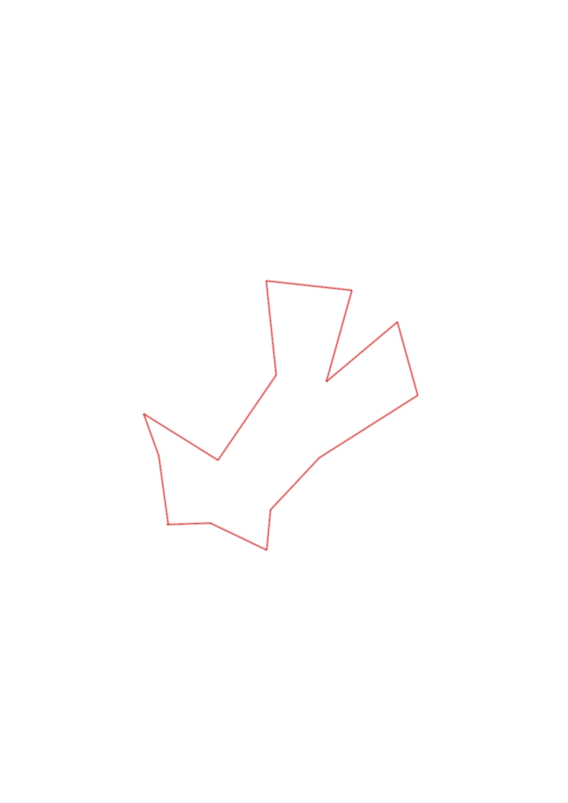

| Control |
Points |
Time Punched |
Distance |
Your Time |
Pace |
Place |
Fastest Time |
Median Time |
% Behind Fastest |
| 63 |
60 |
|
0.24 |
0:01:44 |
07:13 |
2 / 13 |
0:01:34 |
0:02:05 |
10% |
| 54 |
50 |
|
0.35 |
0:04:37 |
13:11 |
5 / 9 |
0:03:08 |
0:04:37 |
47% |
| 80 |
80 |
|
0.22 |
0:02:46 |
12:34 |
2 / 11 |
0:02:23 |
0:03:30 |
16% |
| 48 |
40 |
|
0.4 |
0:03:11 |
07:57 |
4 / 10 |
0:02:29 |
0:03:23 |
28% |
| 81 |
80 |
|
0.65 |
0:05:15 |
08:04 |
1 / 1 |
0:05:15 |
0:05:15 |
0% |
| 46 |
40 |
|
0.42 |
0:04:51 |
11:32 |
6 / 7 |
0:03:46 |
0:04:48 |
28% |
| 59 |
50 |
|
0.52 |
0:03:55 |
07:31 |
2 / 2 |
0:03:34 |
0:03:44 |
9% |
| 61 |
60 |
|
0.53 |
0:04:52 |
09:10 |
1 / 1 |
0:04:52 |
0:04:52 |
0% |
| 34 |
30 |
|
0.48 |
0:03:47 |
07:52 |
4 / 6 |
0:02:42 |
0:03:44 |
40% |
| 36 |
30 |
|
0.53 |
0:03:55 |
07:23 |
4 / 5 |
0:02:45 |
0:03:33 |
42% |
| 41 |
40 |
|
0.57 |
0:04:05 |
07:09 |
1 / 4 |
0:04:05 |
0:09:13 |
0% |
| 58 |
50 |
|
0.49 |
0:04:25 |
09:00 |
1 / 4 |
0:04:25 |
0:05:15 |
0% |
| 51 |
50 |
|
0.25 |
0:03:24 |
13:36 |
8 / 9 |
0:01:43 |
0:02:53 |
98% |
| Finish |
0 |
|
0.39 |
0:05:08 |
13:09 |
2 / 2 |
0:03:02 |
0:04:05 |
69% |
Total Distance Covered: 6.04km
Points Scored: 660
Late Penalty: 0
Final Score: 660
Total Time: 0hours 55minutes 55seconds
Efficiency: 109.27 points/km
 
